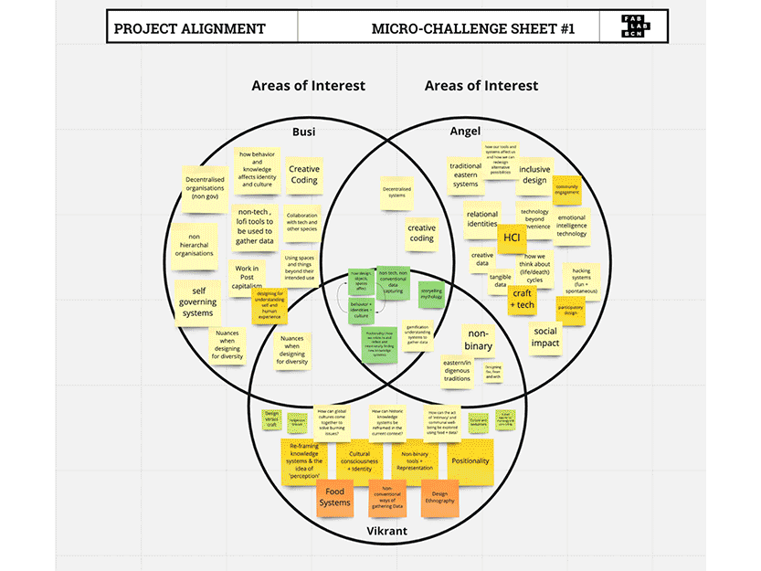
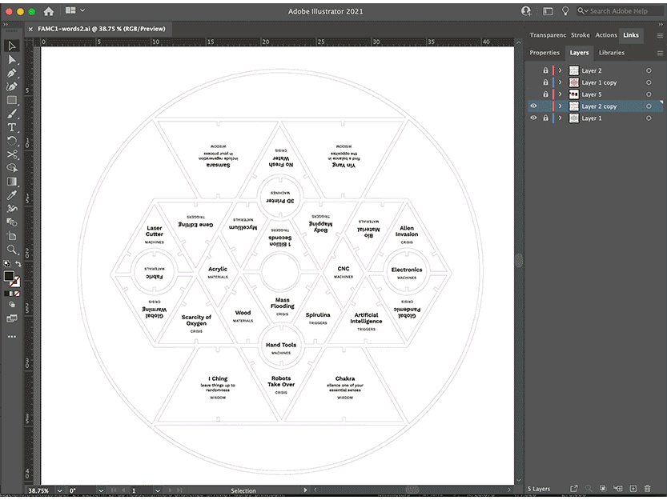
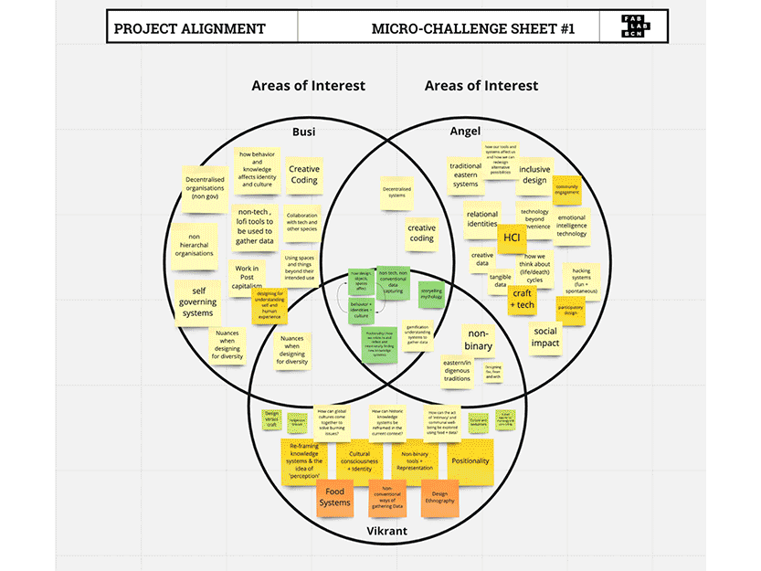
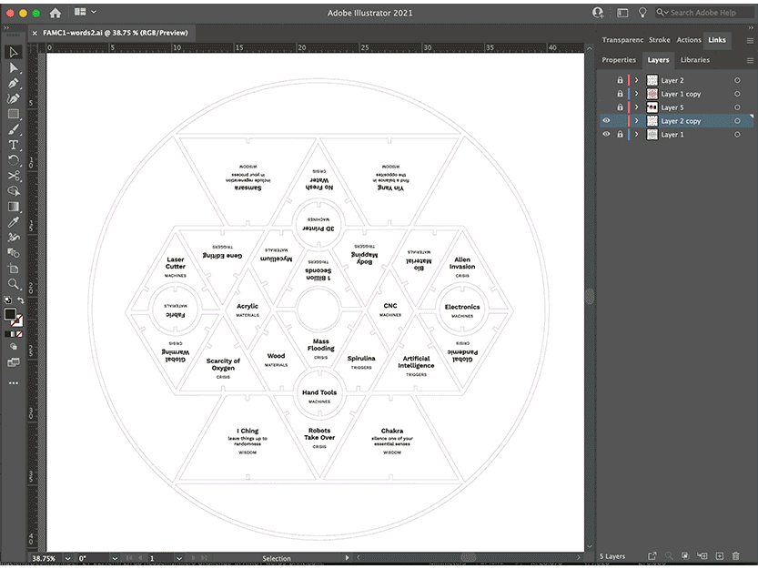

🗓 15-18 February 2022
We spent two full days working out the concept and details of the game; how many platers, the goal of the game, would there be winner, should it be on the board, etc. We realized that creating a great board game from scratch in a few days was not a simple feat, and if we didn't move on to prototyping soon, we could discuss the game for much longer. By the end of day two, Vikrant and I decided to agree on a general simple concept so we can start prototyping. The concept was a board game that could be used as a tool for designers to collaborate and generate new ideas together. Inspired by sacred geometry, the board game would have pieces of geometrical shapes that held 5 themes of information on the back that could be flipped to reveal and iterate on ideas. Each player would flip a piece and try to pitch a concept that was related to their piece, including the pieces that came before. The pieces also had press fit joints, so they would physically be stacked after a round of play, creating a 3D mind-map artifact from the process.
Vikrant and I agreed on the general sketch of the game together, then created small pieces to prototype the press fit mechanism. We did this process twice because the first time we forgot to focus the lense of the laser cutter. After we made sure the prototype worked, we split up the work to save time. I worked on creating the content within the 5 themes (pieces): tools, triggers, weak signals, wisdom cards, and materials. I used the tools, materials, and triggers we had learned from MDEF term1 or the Fab Lab to make it more relevant for us to play. The weak signals were inspired by Atlas of Weak Signals exercise and the Widsom Cards contained Eastern Philosphies and prompts.

I also worked on laying out the text on the pieces and creating the press fit joints on Rhino 3D. One issue we ran into here was that the shapes that were meant to be symetrical were all slightly off in Rhino 3D because we had designed them in illustrator first and then imported them into Rhino. We did this to save time and illustrator was a program we were both familiar with. And since each shape was slighly varying, I had to manually place the press fit cut outs (rectangles) on each of the 26 pieces (3 per piece). We realize the process would have gone smoother if we had started in Rhino to begin with.
On the final day, we arrived at IAAC early to laser cut the files. At the time of laser cutting, we ran into several problems. The size of the entire board game container (circle wrap) was larger than the size of the laser cutter bed. We were feeling pressure by the line of people that were waiting to use the laser cutter after us, and made an on the spot decision to decrease the size of the entire layout. This turned out to be a huge mistake, becuase the press fit shapes also decreased, making them useless. We also realized the intricate symbols that were designed to lift the pieces took a very long time to print due to their detail.
After the cutting, we moved on to assembling the pieces together with glue. The negative shape of all the pieces had to be glued onto a board, where the pieces would then fit into. Then I glued the intricate symbol pieces onto the back (no text) side of each of the pieces, so they could be easily lifted from the surface. Once we had glued all the pieces together, we realized that they didn't fit because the negative shape was glued on on the opposite side, and the pieces were not symetrical due to the original design. By this point, everything seemed to be crumbling down. All from the initial issue of not having the shapes symetrical and parametrical in Rhino. If we had created them in Rhino as parametric, geometric and symmetrical, we could have remedied many of these issues we ran into during production.
All in all, I was happy with the outcome and thought the concept and design of the game were strong. I didn't feel too great about the production part of it, but learned a lot through our mistakes. My biggest learning was that when working with materials, testing early is very important because there may be many factors that I'm not considering while looking at a 2D screen.

Key Lessons Learned:
Micro Challenge 1
For the first micro challenge, I worked with Vikrant and Busi in creating a board game for collaborative ideation, which uses randomness and non-western philosophies to trigger ideas. With each of our personal backgrounds rooting in non-Western cultures and our recent MDEF converstaions on decolonzing the design process, we wanted to imagine a way to use these indigenous systems as a system for design I thought the board game would be a good way to introduce these unfamiliar concepts in a way that is easy to digest. And I was especially interested in transforming the perception of indigenous knowledge, typically seen to be non-scientific or mystical, to be a tool for making practical decisions.We spent two full days working out the concept and details of the game; how many platers, the goal of the game, would there be winner, should it be on the board, etc. We realized that creating a great board game from scratch in a few days was not a simple feat, and if we didn't move on to prototyping soon, we could discuss the game for much longer. By the end of day two, Vikrant and I decided to agree on a general simple concept so we can start prototyping. The concept was a board game that could be used as a tool for designers to collaborate and generate new ideas together. Inspired by sacred geometry, the board game would have pieces of geometrical shapes that held 5 themes of information on the back that could be flipped to reveal and iterate on ideas. Each player would flip a piece and try to pitch a concept that was related to their piece, including the pieces that came before. The pieces also had press fit joints, so they would physically be stacked after a round of play, creating a 3D mind-map artifact from the process.
Vikrant and I agreed on the general sketch of the game together, then created small pieces to prototype the press fit mechanism. We did this process twice because the first time we forgot to focus the lense of the laser cutter. After we made sure the prototype worked, we split up the work to save time. I worked on creating the content within the 5 themes (pieces): tools, triggers, weak signals, wisdom cards, and materials. I used the tools, materials, and triggers we had learned from MDEF term1 or the Fab Lab to make it more relevant for us to play. The weak signals were inspired by Atlas of Weak Signals exercise and the Widsom Cards contained Eastern Philosphies and prompts.

I also worked on laying out the text on the pieces and creating the press fit joints on Rhino 3D. One issue we ran into here was that the shapes that were meant to be symetrical were all slightly off in Rhino 3D because we had designed them in illustrator first and then imported them into Rhino. We did this to save time and illustrator was a program we were both familiar with. And since each shape was slighly varying, I had to manually place the press fit cut outs (rectangles) on each of the 26 pieces (3 per piece). We realize the process would have gone smoother if we had started in Rhino to begin with.
On the final day, we arrived at IAAC early to laser cut the files. At the time of laser cutting, we ran into several problems. The size of the entire board game container (circle wrap) was larger than the size of the laser cutter bed. We were feeling pressure by the line of people that were waiting to use the laser cutter after us, and made an on the spot decision to decrease the size of the entire layout. This turned out to be a huge mistake, becuase the press fit shapes also decreased, making them useless. We also realized the intricate symbols that were designed to lift the pieces took a very long time to print due to their detail.
After the cutting, we moved on to assembling the pieces together with glue. The negative shape of all the pieces had to be glued onto a board, where the pieces would then fit into. Then I glued the intricate symbol pieces onto the back (no text) side of each of the pieces, so they could be easily lifted from the surface. Once we had glued all the pieces together, we realized that they didn't fit because the negative shape was glued on on the opposite side, and the pieces were not symetrical due to the original design. By this point, everything seemed to be crumbling down. All from the initial issue of not having the shapes symetrical and parametrical in Rhino. If we had created them in Rhino as parametric, geometric and symmetrical, we could have remedied many of these issues we ran into during production.
All in all, I was happy with the outcome and thought the concept and design of the game were strong. I didn't feel too great about the production part of it, but learned a lot through our mistakes. My biggest learning was that when working with materials, testing early is very important because there may be many factors that I'm not considering while looking at a 2D screen.

Key Lessons Learned:
- Prototype early!
- Start 3D file in 3D software
- The idea doesn't have to be perfectly thought through before making